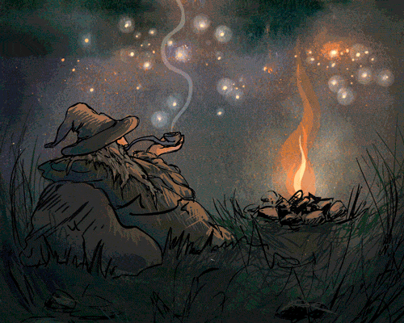

|
|
J. R. R. TolkienEnglish writer, poet, philologist and university professor |
Tolkien was born on 3 January 1892, Bloemfontein, South Africa and died
on 2 September 1973, Bournemouth, Hampshire, England. He is best known
as the author of the high fantasy classic works:
The Silmarillion, The Hobbit and
The Lord of the Rings.
For most of his adult life, he taught English language and literature,
specializing in Old and Middle English, at the Universities of Leeds
(1920-25) and Oxford (1925-59). In private, Tolkien amused himself by
writing an elaborate series of fantasy tales, often dark and sorrowful,
set in a world of his own creation. He created his own “legendarium”,
which eventually became The Silmarillion, partly to provide a
setting in which “Elvish” languages he had invented could exist. But his
tales of Arda and Middle-earth also grew from a desire to tell stories,
influenced by a love of myths and legends. The longest and most
important of those stories, begun about 1930, was The Hobbit.
In 1937 The Hobbit was published, with pictures by the author,
and was so popular that its publisher asked for a sequel. The result, 17
years later, was Tolkien's masterpiece, The Lord of the Rings,
a modern version of the heroic epic.
The Hobbit
The Lord of the Rings
The Children of Húrin
The Silmarillion
Unfinished Tales
During his student days Tolkien was a close friend of C. S. Lewis, a
co-member of the informal literary discussion group The Inklings.
After finishing his degrees in English Language and Literature in
Oxford, Tolkien was recruted to army during the First World War and even
participated in the battle at the Somme.
Tolkien's battalion was
almost completely wiped out following his return to England.
Later
on he worked as the Rawlinson and Bosworth Professor of Anglo-Saxon and
Fellow of Pembroke College, Oxford from 1925 to 1945 and the Merton
Professor of English Language and Literature and Fellow of Merton
College, Oxford from 1945 to 1959.
| Years | Events |
|---|---|
| 1911-1915 | Tolkien was studying English Language and Literature in Oxford. |
| 1915-1918 | Military service during WW2. |
| 1925-1945 | Working as the Rawlinson and Bosworth Professor of Anglo-Saxon and Fellow of Pembroke College, Oxford. |
| 1937 | The Hobbit was published. |
| 1945-1959 | Working as the Merton Professor of English Language and Literature and Fellow of Merton College, Oxford. |
| 1954 | The Lord of the Rings was published. |
| 1977 | The Silmarillion was published. |
J. R. R. Tolkien - Wikipedia article
